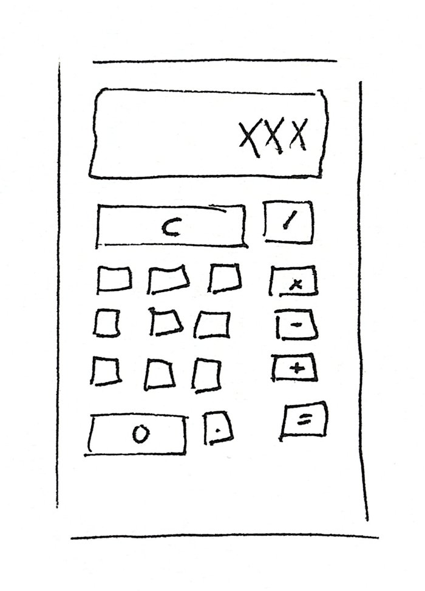
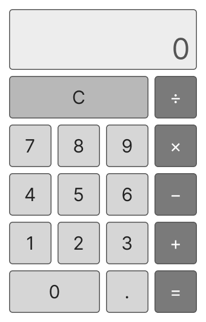
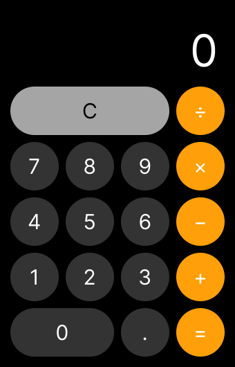
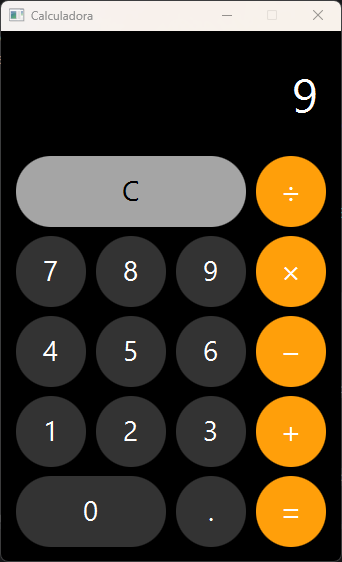
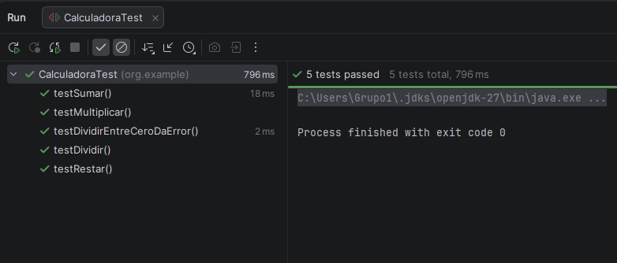

Calculadora JavaFX
Calculadora de escritorio que se maneja con el ratón y con el teclado, del sketch al patrón MVC
Sobre el proyecto
Calculadora es una aplicación de escritorio hecha en JavaFX que suma, resta, multiplica y divide, encadena operaciones y se maneja con el ratón y con el teclado. La interfaz está en FXML, con fondo negro, botones redondos y un solo color vivo para las operaciones.
Es una práctica de Desarrollo de Interfaces de 2º de DAM en dos tareas: primero el diseño (sketch, wireframe y prototipo en Figma) y la implementación con MVC, pruebas JUnit y Javadoc; después, el uso con el teclado. Se puede descargar para Windows sin tener Java instalado.
Del boceto a la aplicación
Sketch
Pantalla arriba y botones en cuadrícula
Wireframe
4 × 5 en grises; C y 0 más anchos
Prototipo
Negro, grises y naranja para las operaciones
JavaFX
FXML, modelo y controlador



Características principales
Ratón y teclado
Cada tecla llama al mismo método que su botón, así que el resultado es idéntico.
Operaciones encadenadas
Si hay una operación pendiente se calcula al pulsar la siguiente: 3 + 4 + 5 da 12.
Sin sorpresas
División entre cero muestra Error, y 0,1 + 0,2 da 0.3, no 0.30000000000000004.
Pruebas y Javadoc
Cinco pruebas JUnit del modelo y Javadoc publicado en GitHub Pages.
Uso con el teclado
- 0 – 9 Escribe el número (teclado normal o numérico)
- + − * / Elige la operación
- . o , Punto decimal
- Enter o = Muestra el resultado
- Ctrl + C Borra, igual que el botón C
App escucha las teclas en la escena con setOnKeyPressed, porque los eventos suben desde el nodo con el foco hasta la raíz, y se las pasa al controlador. Los botones no cogen el foco (focusTraversable="false") para que Enter no pulse uno por error.
La aplicación


Stack Tecnológico
Lenguaje & UI
- Java 11
- JavaFX 13 + FXML
- KeyCode y KeyCodeCombination
Diseño y calidad
- Figma: wireframe y prototipo
- JUnit 5
- Javadoc y memoria en LaTeX
Herramientas
- Maven + jlink
- IntelliJ IDEA
- GitHub Pages y Releases